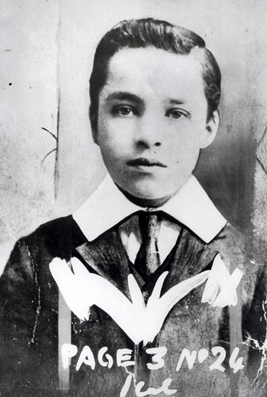
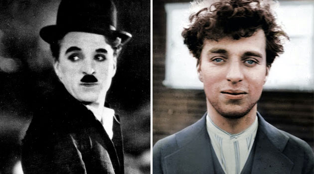
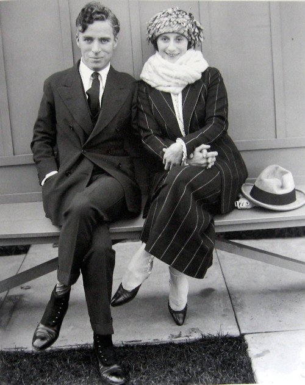
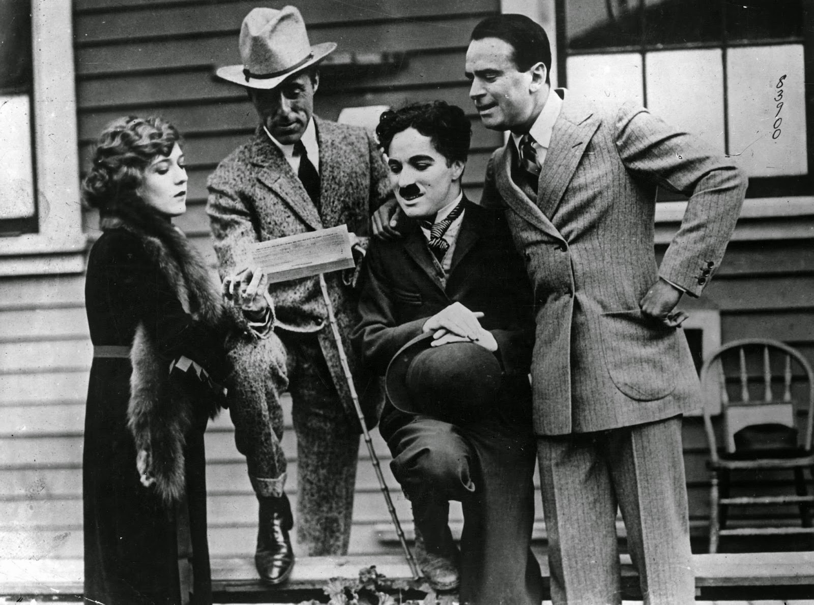

Charles Spencer Chaplin was born in London, England, on April 16th, 1889. His father was a versatile vocalist and actor; and his mother, known under the stage name of Lily Harley, was an attractive actress and singer, who gained a reputation for her work in the light opera field. Charlie was thrown on his own resources before he reached the age of ten as the early death of his father and the subsequent illness of his mother made it necessary for Charlie and his brother, Sydney, to fend for themselves.
Having inherited natural talents from their parents, the youngsters took to the stage as the best opportunity for a career. Charlie made his professional debut as a member of a juvenile group called “The Eight Lancashire Lads” and rapidly won popular favour as an outstanding tap dancer.
When he was about twelve, he got his first chance to act in a legitimate stage show, and appeared as “Billy” the page boy, in support of first H. A. Saintsbury and then William Gillette in different productions of “Sherlock Holmes”. At the close of this engagement, Charlie started a career as a comedian in vaudeville, which eventually took him to the United States in 1910 as a featured player with the Fred Karno Company.
He scored an immediate hit with American audiences, particularly with his characterization in a sketch entitled “A Night in an English Music Hall”. When the Fred Karno troupe returned to the United States in the fall of 1912 for a repeat tour, Chaplin was offered a motion picture contract. He finally agreed to appear before the cameras at the expiration of his vaudeville commitments in November 1913; and his entrance in the cinema world took place that month when he joined Mack Sennett and the Keystone Film Company. His initial salary was $150 a week, but his overnight success on the screen spurred other producers to start negotiations for his services.
At the completion of his Sennett contract, Chaplin moved on to the Essanay Company (1915) at a large increase. Sydney Chaplin had then arrived from England, and took his brother’s place with Keystone as their leading comedian. The following year Charlie was even more in demand and signed with the Mutual Film Corporation for a much larger sum to make 12 two-reel comedies. These include “The Floorwalker”, “The Fireman”, “The Vagabond”, “One A.M.” (a production in which he was the only character for the entire two reels with the exception of the entrance of a cab driver in the opening scene), “The Count”, “The Pawnshop”, “Behind the Screen”, “The Rink”, “Easy Street” (heralded as his greatest production up to that time), “The Cure”, “The Immigrant” and “The Adventurer”.
When his contract with Mutual expired in 1917, Chaplin decided to become an independent producer in a desire for more freedom and greater leisure in making his movies. To that end, he busied himself with the construction of his own studios. This plant was situated in the heart of the residential section of Hollywood at La Brea Avenue.
Early in 1918, Chaplin entered into an agreement with First National Exhibitors' Circuit, a new organization specially formed to exploit his pictures. His first film under this new deal was “A Dog's Life”. After this production, he turned his attention to a national tour on behalf of the war effort, following which he made a film the US government used to popularize the Liberty Loan drive: “The Bond”. His next commercial venture was the production of a comedy dealing with the war. “Shoulder Arms”, released in 1918 at a most opportune time, proved a veritable mirthquake at the box office and added enormously to Chaplin's popularity.